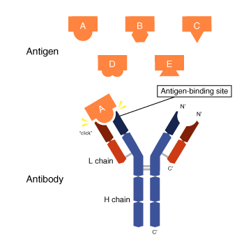

شبنم رضاپور
کسی که PDFها را راضی کرد محتوایشان را بیکموکاست لو بدهند.
این جزوه با استفاده از جزوهساز پاپیروس و به صورت خودکار تولید شده است. ممکن است شامل خطا یا برداشت نادرست باشد و نیازمند بررسی و بازبینی مجدد است.
موضوع جلسه، تاریخچهای از ایمنیشناسی است؛ هدف، برقرارکردن ارتباط میان علوم پایهٔ ایمونولوژی و کار آزمایشگاه، بهویژه تستهای اختصاصی آزمایشگاه ایمونولوژی است.
مسیر کلی جلسه «از یک مشاهدهٔ ساده تا آزمایشگاه مدرن ایمنیشناسی» است. در پایان جلسه، دانشجو باید بتواند تفاوت نگاه تاریخی به ایمنیشناسی و نگاه علمی و مدرن امروزی را توضیح دهد، نقش Jenner، Pasteur، Metchnikoff، Ehrlich و Burnet را در یک خط زمانی قرار دهد و ارتباط تاریخچهٔ ایمنیشناسی را با تستهای آزمایشگاهی مدرن، از جمله ELISA، flow cytometry و immunoassay، درک کند.
نمرهدهی درس از ۲۰ نمره است: پایانترم ۱۰ نمره، میانترم ۵ نمره، Quizهای کوتاه ۳ نمره و فعالیت آموزشی ۲ نمره.
فعالیت آموزشی شامل پاسخدادن به پرسشهای مطرحشده در کلاس است. پرسشها ممکن است دربارهٔ جلسهٔ قبل باشند یا در جریان بحث همان جلسه مطرح شوند. مشارکت و پاسخگویی فعالتر، امتیاز بیشتری برای فعالیت کلاسی دارد.
اگر دانشجو در جلسهای که Quiz برگزار میشود حضور نداشته باشد، نمرهٔ آن Quiz را نمیگیرد.
تصویر 3
در تصویر به حفاظت در برابر آبلهٔ انسانی پس از مواجهه با آبلهٔ گاوی اشاره شده است.
پیش از تعریف ایمنیشناسی و ورود به تاریخچهٔ ایمونولوژی، این پرسش مطرح میشود: چرا بعضی افراد پس از ابتلا به یک بیماری عفونی، در مواجههٔ دوباره با همان عامل بیماریزا کمتر بیمار میشوند؟
این موضوع دربارهٔ همهٔ افراد صدق نمیکند، اما در بعضی افراد دیده میشود. در مواجههٔ نخست با عامل بیگانه، بدن پاسخ ایمنی ایجاد میکند. اگر همان عامل دوباره وارد شود، پاسخ میتواند زودتر شکل بگیرد و زمان لازم برای پاسخدادن به antigen کاهش یابد. بدن عامل بیماریزا را به خاطر میسپارد و در مواجههٔ بعدی، حافظهٔ ایمنی (immune memory) به حفاظت کمک میکند. سلولهای B و سلولهای حافظه در این فرایند نقش دارند.
عفونت اولیه یا واکسن میتواند زمینهٔ شکلگیری حافظهٔ ایمنی را فراهم کند. میزان حفاظت به نوع عامل بیماریزا، واکسن و وضعیت ایمنی فرد بستگی دارد؛ وضعیت سیستم ایمنی و ژنتیک فرد نیز بر پاسخ او مؤثر است.
ایمنیشناسی علمی است که توضیح میدهد بدن چگونه:
| اصطلاح علمی | تعریف |
|---|---|
| 1) recognition | غیرخودی را تشخیص میدهد |
| 2) response | پاسخ دفاعی ایجاد میکند |
| 3) regulation | پاسخ را تنظیم و کنترل میکند |
| 4) memory | تجربه را به خاطر میسپارد |
ابتدا عامل بیگانه شناسایی میشود و سپس سلولهای ایمنی در برابر آن پاسخ دفاعی ایجاد میکنند. پاسخ ایمنی باید تنظیم شود؛ اگر مهار نشود، ممکن است به بدن خود فرد آسیب برساند، از جمله در پاسخهای بیشازحد مانند مواردی از hypersensitivity.
ارتباط دقیق این بیماریها با تنظیم پاسخ ایمنی در جلسهٔ مربوط به خودایمنی بررسی میشود.
آمار ابتلا به MS گفته شده «از هر ۹ نفر یک نفر به این بیماری مبتلاست.
ایمنیشناسی فقط یک درس تئوری نیست؛ اساس بسیاری از تستهای تشخیصی، واکسنها، آنتیبادیهای مونوکلونال و تشخیص نقص ایمنی است.
در ایمنیشناسی ۱ ابتدا پایههای سیستم ایمنی بررسی میشوند. ترتیب کلی مباحث چنین است:
در ایمنیشناسی ۲ بیشتر به بیماریها و واکسیناسیون پرداخته میشود.
مسیر تاریخی کلی به این ترتیب است:
| زمان | دانشمند یا دستاورد | موضوع | ترتیب وقوع |
|---|---|---|---|
| ۱۷۹۶ | Jenner | ایدهٔ واکسیناسیون | 1 |
| دههٔ ۱۸۸۰ | Pasteur | کار روی واکسن ضعیفشده | 2 |
| ۱۸۸۲ | Metchnikoff | phagocytosis و ایمنی سلولی | 3 |
| دههٔ ۱۸۹۰ | Ehrlich | antibody و ایمنی humoral | 4 |
| ۱۹۵۷ | Burnet | انتخاب کلونال (clonal selection) | 5 |
| ۱۹۷۵ | hybridoma | تولید آنتیبادی مونوکلونال | 6 |
| ایمنیشناسی امروز | — | ELISA، Flow، immunotherapy و آنتیبادیهای مونوکلونال | 7 |
در این جلسه دانستن مسیر کلی اهمیت دارد و لازم نیست سالها حفظ شوند، هرچند دانستن آنها مفید است.
پیش از شکلگیری علم مدرن، ایمنیشناسی از آزمایشگاه شروع نشد، بلکه از مشاهدهٔ بالینی آغاز شد. (مشاهدهٔ تاریخی این بود که بعضی افراد پس از یک بار مواجهه با بیماری، در مواجههٔ بعدی کمتر بیمار میشدند.) این مشاهده مفهوم حفاظت پس از مواجهه و Memory را مطرح کرد، اما هنوز سازوکار سلولی یا مولکولی آن شناخته نشده بود. در آن زمان عامل بیماریزا یا pathogen را نمیشناختند.
زنان گاو دوشی که به آبلهٔ گاوی مبتلا میشدند، اگر بعداً در معرض آبلهٔ انسانی قرار میگرفتند، کمتر بیمار میشدند یا علائمی نشان نمیدادند. Jenner روی دست این زنان زخمهایی دید که نشانهٔ آبلهٔ گاوی بود. آبلهٔ گاوی شبیه آبلهٔ انسانی است، اما بیماری خفیفتری ایجاد میکند و علائم کشندهٔ آبلهٔ انسانی را ندارد. Jenner نمیدانست pathogen چیست و بر پایهٔ مشاهدههای تجربی به نتیجه رسید.
در سال ۱۷۹۶، در اواخر قرن هجدهم، پزشک انگلیسی Edward Jenner افراد را با واکسیناسیون آشنا کرد. او از مایع یا مادهٔ روی زخم آبلهٔ گاوی برداشت و به پسربچهای حدوداً ۱۰ تا ۱۲ ساله تزریق کرد. پس از مدتی، پسر را با مادهٔ آبلهٔ انسانی مواجه کرد. این کار بر اساس قوانین اخلاقی امروز ممنوع است؛ اما در آن زمان چنین محدودیتهایی وجود نداشت و اگر فردی داوطلب میشد، این کار انجام میگرفت.
آبلهٔ انسانی بیماری خطرناکی بود و میتوانست فرد را بکشد. پسربچه پس از مواجههٔ قبلی با آبلهٔ گاوی در برابر آبلهٔ انسانی محافظت شد. این حفاظت به شباهت antigen ای میان دو عامل (آبله انسانی و آبله گاوی) نسبت داده میشود؛ در نتیجه، آبلهٔ انسانی در بدن او خود را نشان نداد.
ایدهٔ اصلی Jenner استفادهٔ کنترلشده از عاملی کمخطرتر برای ایجاد حفاظت بود. این ایده به ایمنی اکتسابی و حافظهٔ ایمنی مربوط است. Jenner یافتههای خود را در ۱۷۹۸ منتشر کرد و کار او نقطهٔ عطفی در توسعهٔ واکسیناسیون شد.
پیش از Jenner روش variolation نیز وجود داشت. در این روش از مادهٔ آبلهٔ انسانی، مثلاً از زخمهای آبله، برای مواجههدادن فرد دیگری استفاده میکردند. این روش خطرناک بود، چون عامل بیماریزا ممکن بود وارد بدن شود و حتی باعث مرگ شود.
واژهٔ واکسیناسیون (Vaccination) از کلمهٔ لاتین Vacca به معنی «گاو ماده» گرفته شده است. این نام به ادوارد جنر در اواخر قرن هجدهم مربوط میشود که با استفاده از ویروس آبلهٔ گاوی، روشی برای پیشگیری از آبلهٔ انسانی ابداع کرد. بعدها لویی پاستور در قرن نوزدهم این مفهوم را گسترش داد و واژهٔ واکسیناسیون به افتخار جنر برای روشهای ایمنسازی به کار رفت.
تقریباً یک قرن پس از Jenner، Louis Pasteur واکسیناسیون را گسترش داد و آن را به مطالعهٔ علمی و آزمایشگاهی رساند. Jenner بر پایهٔ مشاهدههای تجربی به نتیجه رسیده بود؛ Pasteur موضوع را در آزمایشگاه بررسی کرد. در زمان Pasteur عاملهای بیماریزا شناخته شده بودند و بیماریهای عفونی را با عامل میکروبی مشخص مرتبط میدانستند.
Pasteur روی عاملهای میکروبی کار کرد و بعضی از آنها را attenuate، یعنی ضعیف، کرد. میکروب هنوز زنده بود، اما بیماریزایی آن بسیار کمتر میشد و خاصیت antigenicity آن باقی میماند. بنابراین، بدن میتوانست آن را بهعنوان antigen شناسایی کند و بدون ایجاد بیماری پاسخ ایمنی بسازد.
او بعضی عاملهای میکروبی را کاملاً غیرفعال نیز کرد. در این حالت، عامل بیماریزا از بین میرفت، اما ساختارهای antigenی باقی میماندند و بدن میتوانست آنها را شناسایی کند.
مسیر کلی واکسن چنین است:
واکسن بدن را با عامل میکروبی ضعیفشده یا غیرفعالشده مواجه میکند. بیماریزایی عامل از بین رفته یا بسیار کم شده، اما خاصیت antigenی حفظ شده است؛ بنابراین، سیستم ایمنی میتواند آن را شناسایی کند و پاسخ بدهد.
در دورهٔ Pasteur تغییر مهمی رخ داد: روشن شد که بیماریهای عفونی عامل مشخصی دارند. وقتی عامل بیماریزا قابل شناسایی شد، پاسخ بدن نیز قابل اندازهگیری شد و ایمنیشناسی وارد آزمایشگاه شد. از همینجا مفاهیمی مانند antigen، antibody و serology اهمیت پیدا کردند و ایمنیشناسی به پایهٔ بسیاری از تستهای تشخیصی تبدیل شد.
Metchnikoff به نگاه سلولی در ایمنیشناسی و phagocytosis شناخته میشود. در مشاهدهای که از ستارهٔ دریایی داشت، به بلعیدن ذرات بهوسیلهٔ سلولها توجه کرد.
Phagocytosis یعنی بلعیدن و حذف ذرات یا میکروبها بهوسیلهٔ سلولهای دفاعی. ایمنی فرایندی فعال و سلولی است: سلولهای دفاعی میتوانند حرکت کنند، عامل را تشخیص دهند، بهسوی آن بروند، آن را ببلعند و درون خود تخریب کنند.
سلولهای فاگوسیتکننده یا phagocyte شامل neutrophil و macrophage هستند. در خون محیطی، بیشترین درصد سلولهای فاگوسیتکننده neutrophilها هستند؛ در بافت، macrophageها حضور دارند. Monocyteها با ورود از خون به بافت تغییر شکل میدهند و به macrophage تبدیل میشوند. Dendritic cell نیز از سلولهایی است که در جلسههای بعد و در بحث ایمنی ذاتی بررسی میشود.
اگر پرسیده شود کدام سلولهای خون محیطی بیشتر در phagocytosis درگیرند، پاسخ neutrophil است. این پاسخ دربارهٔ خون محیطی است، نه بافت. این بحث در جلسههای بعد به neutrophil، macrophage و dendritic cell وصل میشود.
Ehrlich به ایمنی humoral و antibody پرداخت؛ در کنار او، Behring نیز روی این موضوع کار کرده است. ایمنی humoral یکی از بخشهای ایمنی اکتسابی یا ایمنی اختصاصی است. ایمنی اکتسابی دو زیرگروه دارد: ایمنی سلولی که با T cellها ارتباط دارد و ایمنی humoral که با B cellها ارتباط دارد.
B cellها گیرندههایی روی سطح خود دارند که شبیه antibody هستند. پس از برخورد B cell با antigen و تکثیر آن، بخشی از سلولها به plasma cell تبدیل میشوند و مقدار زیادی antibody ترشح میکنند.
در سرم خون بیمار، antibody ترشحشده را بررسی میکنیم، نه antibody متصل به سطح B cell.
Antibodyها مولکولهای محلول نیز هستند و میتوانند بهطور اختصاصی به antigen متصل شوند. در ایمنی اختصاصی، antigen با اختصاصیت بالا شناخته میشود و اتصال را میتوان به قفل و کلید تشبیه کرد. antibody ساختاری شبیه حرف Y انگلیسی دارد و دو سر بازوهای آن به antigen متصل میشوند. اگر محل اتصال antibody فرورفته باشد، بخش متناس ب antigen باید شکل مکمل داشته باشد تا اتصال اختصاصی برقرار شود.

در گذشته، ایمنیشناسی گاهی بهصورت بحثی دربارهٔ «سلول یا antibody» مطرح میشد؛ اما امروز میدانیم هر دو لازماند و با هم کار میکنند.
سیستم ایمنی شبکهای هماهنگ از سلولها و مولکولهاست و نباید ایمنی سلولی و humoral را دو بخش کاملاً جدا و مستقل تصور کرد. مولکولهای محلول در پلاسما با ایمنی humoral و سلولها با ایمنی سلولی مرتبطاند.
برای مثال، در بعضی بیماریها مانند MS ممکن است T cellها به سیستم عصبی مرکزی (central nervous system) و myelin آسیب بزنند. بااینحال، حتی اگر نقش اصلی در بیماری با T cellها باشد، B cellها و antibodyها را نمیتوان نادیده گرفت. سیستم ایمنی بدون هماهنگی میان سلولها و مولکولها کار نمیکند و این دو بخش در کنار هم عمل میکنند.
ویژگیهای مهم ایمنی اکتسابی اختصاصیت و حافظهاند؛ این ویژگیها به همین شکل در ایمنی ذاتی مطرح نیستند.
در سال ۱۹۵۷، Burnet نظریهٔ انتخاب کلونال (clonal selection) را مطرح کرد.
در گذشته نظریهٔ آموزشی وجود داشت. بر اساس آن تصور میشد antigen که وارد بدن میشود، به سلولها آموزش میدهد و گیرندههایشان را طوری تغییر میدهد که شبیه antigen شوند. Burnet این تصور را نپذیرفت و گفت بدن از قبل کلونهای متنوعی دارد و antigen کلون مناسب را انتخاب میکند. او تعداد کلونهای B cell و T cell را حدود ۱۰⁸ تا ۱۰¹⁴ بیان کرد؛ ۱۰⁸ برابر با ۱۰۰ میلیون است. گیرندهٔ هر کلون با گیرندهٔ کلون دیگر تفاوت دارد و سلولها لازم نیست با ورود هر antigen آموزش ببینند و گیرندههایشان را تغییر دهند.
وقتی antigen وارد بدن میشود، با گیرندههای گوناگون برخورد میکند. اگر گیرندهای با آن antigen جور باشد، اتصال اختصاصی برقرار میشود و همان کلون انتخاب میشود؛ سپس کلون انتخابشده تکثیر میشود و سلولهای مشابه میسازد.
منظور از کلون، یک سلول B یا T و سلولهای مشابهی است که از تکثیر آن بهوجود میآیند. در این توضیح، بهویژه B cell مطرح است، چون گیرندهٔ سطحی آن ساختاری شبیه antibody دارد. سلولهای B تکثیرشده میتوانند به plasma cell تبدیل شوند و antibody مشابه گیرندهٔ سطح B cell را ترشح کنند. بنابراین، در سرم بیمار میتوان antibody ترشحشده را اندازهگیری کرد.
در شکل انتخاب کلونال، برای سادهشدن توضیح، چند کلون از میان تعداد زیادی کلون نشان داده شدهاند: antigen با گیرندههای مختلف برخورد میکند، کلون دارای گیرندهٔ متناسب را انتخاب میکند و آن کلون تکثیر میشود. پیام اصلی این است که پاسخ اختصاصی از انتخاب و تکثیر یک کلون سلولی مناسب ایجاد میشود، نه از تغییر گیرندهٔ سلول پس از ورود antigen.
در سال ۱۹۷۵، Köhler و Milstein با فناوری hybridoma آنتیبادیهای مونوکلونال تولید کردند و در ایمونولوژی تحول ایجاد شد.
مونوکلونال یعنی آنتیبادیهایی که از یک کلون منشأ میگیرند و اختصاصیت یکسان دارند. در این روش، یک کلون از میان کلونهای موجود انتخاب و با سلول سرطانی ادغام میشود. B cell بهتنهایی عمر محدودی دارد، اما سلول سرطانی توانایی تکثیر طولانیمدت دارد (سلول سرطانی عمر طولانی دارد) . با ادغام آنها، سلولی بهدست میآید که میتواند مدت زیادی تکثیر شود و antibody تولید کند. این سلول حاصل را میتوان در محیط کشت نگهداری کرد و برای تولید آنتیبادی مونوکلونال به کار برد؛ در گفتار گفته شد که میتوان از آن برای مدت طولانیتر، حتی یکیدو سال، استفاده کرد.
آنتیبادی مونوکلونال برای تشخیص بیماریها و نیز درمان بهکار میرود. کاربردهای درمانی، از جمله در immunotherapy، در ادامهٔ درس بیشتر بررسی میشوند.
آنتیبادی مونوکلونال برای علوم آزمایشگاهی اهمیت ویژه دارد، زیرا در تشخیص آزمایشگاهی اختصاصیت و تکرارپذیری مهماند. کلیدواژهٔ این بخش Specificity است. Köhler و Milstein بهسبب توانایی و کارشان در ژنتیک توانستند این روش را پیش ببرند. دانشجویان میتوانند برای جلسهٔ بعد چند دقیقه دربارهٔ فناوری hybridoma مطالعه کنند و توضیح دهند.
در آزمایشگاههای امروز، ثمرهٔ تاریخچهٔ ایمنیشناسی را در تستهایی مانند serology، ELISA، immunofluorescence و flow cytometry میبینیم.
در serology وجود antibody یا antigen بررسی میشود. در آزمایشگاه سرولوژی، برخلاف آزمایشهایی که سلولهای خون را شناسایی میکنند، مولکولهای محلول در سرم بررسی میشوند. Antibodyها ماهیت پروتئینی دارند و در سرم خون بهصورت محلولاند. معمولاً بهدنبال antibody هستیم و در موارد کمتری antigen را در سرم بیمار تشخیص میدهیم.
بسیاری از این تستها بر مفاهیمی مانند antigen، antibody و serology تکیه دارند.
این واژهها از اصطلاحات کلیدی جلسهاند.
تلفظ نام Milstein ممکن است در منابع انگلیسی و آلمانی متفاوت باشد.
دانشجویان در یک فعالیت سهدقیقهای خط زمانی را کامل میکنند و Jenner، Pasteur، Ehrlich، Burnet، Metchnikoff و Hybridoma را در جایگاههای مربوط قرار میدهند.
سه پیام اصلی جلسه عبارتاند از:
جلسهٔ بعد به سلولهای سیستم ایمنی میپردازد. پرسش آغازین جلسهٔ بعد این است: اگر phagocytosis مهم است، کدام سلولها آن را انجام میدهند؟
| زمان | دانشمند یا دستاورد | موضوع |
|---|---|---|
| ۱۷۹۶ | Jenner | ایدهٔ واکسیناسیون |
| دههٔ ۱۸۸۰ | Pasteur | کار روی واکسن ضعیفشده |
| ۱۸۸۲ | Metchnikoff | phagocytosis و ایمنی سلولی |
| دههٔ ۱۸۹۰ | Ehrlich | antibody و ایمنی humoral |
| ۱۹۵۷ | Burnet | انتخاب کلونال (clonal selection) |
| ۱۹۷۵ | hybridoma | تولید آنتیبادی مونوکلونال |
| ایمنیشناسی امروز | — | ELISA، Flow، immunotherapy و آنتیبادیهای مونوکلونال |
| جنبه | توضیح |
|---|---|
| مواجههٔ نخست | بدن در برابر عامل بیگانه پاسخ ایمنی ایجاد میکند. |
| مواجههٔ دوباره با همان عامل | پاسخ میتواند زودتر شکل بگیرد و زمان لازم برای پاسخدادن به antigen کاهش یابد. |
| نقش حافظهٔ ایمنی | تجربهٔ قبلی را به خاطر میسپارد و به حفاظت در مواجههٔ بعدی کمک میکند. |
| شکلگیری زمینهٔ حافظه | عفونت اولیه یا واکسن میتواند زمینهٔ شکلگیری حافظهٔ ایمنی را فراهم کند. |
| عوامل مؤثر بر میزان و نوع حفاظت | نوع عامل بیماریزا، واکسن، وضعیت ایمنی، وضعیت سیستم ایمنی و ژنتیک فرد. |
| ویژگی | variolation | روش Jenner |
|---|---|---|
| مادهٔ مورد استفاده | مادهٔ آبلهٔ انسانی، مثلاً از زخمهای آبله | آبلهٔ گاوی |
| توصیف خطر | خطرناک بود، چون عامل بیماریزا ممکن بود وارد بدن شود و حتی باعث مرگ شود. | آبلهٔ گاوی منبعی کمخطرتر بود. |
| واژهٔ مرتبط | smallpox: آبلهٔ انسانی | cowpox: آبلهٔ گاوی |
| رویکرد | وضعیت عامل بیماریزا | آنچه حفظ میشود یا رخ میدهد |
|---|---|---|
| ضعیفسازی (attenuation) | میکروب زنده است، اما بیماریزایی آن بسیار کمتر میشود. | خاصیت antigenicity باقی میماند و بدن میتواند آن را بهعنوان antigen شناسایی کند و پاسخ ایمنی بسازد. |
| غیرفعالسازی | عامل بیماریزا کاملاً غیرفعال میشود و از بین میرود. | ساختارهای antigenی باقی میمانند و بدن میتواند آنها را شناسایی کند. |
| سلول یا گروه سلولی | جایگاه یا نکتهٔ مطرحشده |
|---|---|
| neutrophil | در خون محیطی، بیشترین درصد سلولهای فاگوسیتکننده را دارد. |
| macrophage | در بافت حضور دارد. |
| Monocyte | با ورود از خون به بافت تغییر شکل میدهد و به macrophage تبدیل میشود. |
| Dendritic cell | از سلولهایی است که در بحث ایمنی ذاتی بررسی میشود. |
| جنبه | ایمنی humoral | ایمنی سلولی |
|---|---|---|
| ارتباط دادهشده در این جلسه | B cellها | T cellها |
| جایگاه در تقسیمبندی | یکی از زیرگروههای ایمنی اکتسابی یا اختصاصی | یکی از زیرگروههای ایمنی اکتسابی یا اختصاصی |
| اجزای مطرحشده | antibodyها و Complement | phagocyteها و لنفوسیتهای T |
| ارتباطها و کارکردهای مطرحشده | خنثیسازی میکروب، فعالسازی التهاب و کمک به phagocytosis | میتواند با کشتن سلول آلوده ارتباط داشته باشد |
| ارتباط کلی | مولکولهای محلول در پلاسما با ایمنی humoral مرتبطاند. | سلولها با ایمنی سلولی مرتبطاند. |
| نکتهٔ مربوط به antibody | B cell و antibody؛ antibody سطح B cell، membrane antibody است و antibody ترشحشده، secretory antibody است. | — |
| ویژگی یا سلول | ایمنی ذاتی | ایمنی اکتسابی |
|---|---|---|
| سلولهای ذکرشده | Macrophage، dendritic cell و neutrophil | B cell و T cell |
| اختصاصیت و حافظه | این ویژگیها به همین شکل در ایمنی ذاتی مطرح نیستند. | اختصاصیت و حافظه از ویژگیهای مهم آناند. |
| ارتباط با انتخاب کلون | — | antigen میتواند کلون مناسب را انتخاب کند. |
| نظریهٔ آموزشیِ گذشته | نظریهٔ انتخاب کلونال Burnet |
|---|---|
| تصور میشد antigen که وارد بدن میشود، به سلولها آموزش میدهد و گیرندههایشان را طوری تغییر میدهد که شبیه antigen شوند. | بدن از قبل کلونهای متنوعی دارد و antigen کلون مناسب را انتخاب میکند. |
| گیرنده پس از ورود antigen تغییر میکند. | گیرندههای کلونها از قبل متفاوتاند و لازم نیست با ورود هر antigen تغییر کنند. |
| جزء یا ویژگی | توضیح در روش hybridoma |
|---|---|
| B cell | بهتنهایی عمر محدودی دارد. |
| سلول سرطانی | توانایی تکثیر طولانیمدت دارد. |
| ادغام دو سلول | سلولی بهدست میآید که میتواند مدت زیادی تکثیر شود و antibody تولید کند. |
| سلول حاصل | میتوان آن را در محیط کشت نگهداری کرد و برای تولید آنتیبادی مونوکلونال به کار برد؛ در گفتار گفته شد که میتوان از آن برای مدت طولانیتر، حتی یکیدو سال، استفاده کرد. |
| روش یا حوزه | آنچه در آن بررسی یا شناسایی میشود |
|---|---|
| Serology | وجود antibody یا antigen؛ مولکولهای محلول در سرم بررسی میشوند. معمولاً بهدنبال antibody هستیم و در موارد کمتری antigen را در سرم بیمار تشخیص میدهیم. |
| ELISA | اتصال اختصاصی بررسی میشود و تغییر رنگ دیده میشود. |
| Immunofluorescence | محل antigen در بافت یا سلول مشاهده میشود و بعضی antigenها در بافت شناسایی میشوند. |
| Flow cytometry | سلولها با markerها شناسایی میشوند. |
| دانشمند یا دستاورد | نقش مطرحشده در جلسه |
|---|---|
| Jenner | ایدهٔ واکسیناسیون را بر پایهٔ مشاهدهٔ بالینی مطرح کرد، بیآنکه علت علمی آن را بداند. |
| Pasteur | واکسنها را بهصورت علمی بررسی کرد و دربارهٔ ضعیفسازی عامل بیماریزا کار کرد. |
| Metchnikoff | با phagocytosis و ایمنی سلولی شناخته میشود و دربارهٔ سلولهای T نیز کار کرد؛ در این جلسه بر phagocytosis تأکید شد. |
| Ehrlich و Behring | Ehrlich دربارهٔ ایمنی humoral کار کرد؛ Behring نیز در این حوزه فعالیت داشت. |
| Burnet | نظریهٔ clonal selection را مطرح کرد. |
| Köhler و Milstein | با hybridoma آنتیبادی مونوکلونال تولید کردند. |
چهار کارکردی را که ایمنیشناسی دربارهٔ عملکرد بدن توضیح میدهد نام ببرید و بهاختصار شرح دهید.
ایمنیشناسی توضیح میدهد بدن چگونه غیرخودی را تشخیص میدهد (Recognition)، پاسخ دفاعی ایجاد میکند (Response)، پاسخ را تنظیم و کنترل میکند (Regulation) و تجربه را به خاطر میسپارد (Memory).
روش Jenner را با variolation مقایسه کنید و توضیح دهید چرا روش Jenner کمخطرتر توصیف شده است.
در variolation از مادهٔ آبلهٔ انسانی، مثلاً از زخمهای آبله، برای مواجههدادن فرد دیگری استفاده میکردند؛ این روش خطرناک بود، چون عامل بیماریزا ممکن بود وارد بدن شود و حتی باعث مرگ شود. روش Jenner از آبلهٔ گاوی بهعنوان منبعی کمخطرتر استفاده میکرد.
مسیر کلی انتخاب کلونال را از برخورد antigen با گیرندهها تا تولید پاسخ اختصاصی توضیح دهید.
بدن از قبل کلونهای متنوعی با گیرندههای متفاوت دارد. وقتی antigen وارد بدن میشود، با گیرندههای گوناگون برخورد میکند؛ گیرندهٔ متناسب با آن اتصال اختصاصی برقرار میکند و کلون مربوط انتخاب میشود. کلون انتخابشده تکثیر میشود و سلولهای مشابه میسازد. بنابراین، پاسخ اختصاصی از انتخاب و تکثیر کلون مناسب ایجاد میشود، نه از تغییر گیرندهٔ سلول پس از ورود antigen.
در روش hybridoma، نقش B cell و سلول سرطانی در تولید آنتیبادی مونوکلونال چیست؟
B cell بهتنهایی عمر محدودی دارد، اما سلول سرطانی توانایی تکثیر طولانیمدت دارد. با ادغام آنها، سلولی بهدست میآید که میتواند مدت زیادی تکثیر شود و antibody تولید کند. سلول حاصل را میتوان در محیط کشت نگهداری کرد و برای تولید آنتیبادی مونوکلونال به کار برد.
تفاوت سرولوژی، ELISA، Immunofluorescence و Flow cytometry را بر اساس آنچه در هر روش بررسی یا شناسایی میشود بیان کنید.
در serology وجود antibody یا antigen بررسی میشود و مولکولهای محلول در سرم مورد توجهاند؛ معمولاً بهدنبال antibody هستیم و در موارد کمتری antigen را در سرم بیمار تشخیص میدهیم. در ELISA اتصال اختصاصی بررسی میشود و تغییر رنگ دیده میشود. در Immunofluorescence میتوان محل antigen را در بافت یا سلول مشاهده کرد و بعضی antigenها را در بافت شناسایی کرد. در Flow cytometry سلولها با markerها شناسایی میشوند.
کدام گزینه ترتیب کارکردهای اصلی بدن در تعریف ایمنیشناسی را بهدرستی بیان میکند؟
ایمنیشناسی به Recognition، Response، Regulation و Memory میپردازد.
کدام گزینه تفاوت درست میان variolation و روش Jenner را بیان میکند؟
در variolation از مادهٔ آبلهٔ انسانی استفاده میشد؛ تفاوت اساسی روش Jenner استفاده از آبلهٔ گاوی بهعنوان منبعی کمخطرتر بود.
طبق توضیح جلسه، در عامل میکروبی ضعیفشده به روش Pasteur چه ویژگیای باقی میماند؟
در ضعیفسازی، میکروب زنده میماند، بیماریزایی آن بسیار کمتر میشود و خاصیت antigenicity آن باقی میماند.
کدام گزینه دربارهٔ phagocyteها مطابق مطالب جلسه است؟
neutrophilها در خون محیطی بیشترین درصد سلولهای فاگوسیتکننده را دارند؛ macrophageها در بافت حضور دارند و Monocyteها با ورود از خون به بافت به macrophage تبدیل میشوند.
طبق تقسیمبندی مطرحشده در جلسه، ایمنی humoral بیشتر با کدام سلولها ارتباط دارد؟
ایمنی humoral با B cellها و ایمنی سلولی با T cellها ارتباط داده شد.
در نظریهٔ clonal selection، پس از ورود antigen چه اتفاقی میافتد؟
بدن از قبل کلونهای متنوعی دارد و antigen کلون دارای گیرندهٔ متناسب را انتخاب میکند؛ سپس آن کلون تکثیر میشود.
در روش hybridoma، چرا B cell با سلول سرطانی ادغام میشود؟
B cell بهتنهایی عمر محدودی دارد، اما سلول سرطانی توانایی تکثیر طولانیمدت دارد؛ ادغام آنها سلولی ایجاد میکند که میتواند مدت زیادی تکثیر شود و antibody تولید کند.
در serology معمولاً چه چیزی در سرم بررسی میشود؟
در serology مولکولهای محلول در سرم بررسی میشوند؛ معمولاً بهدنبال antibody هستیم و در موارد کمتری antigen را در سرم بیمار تشخیص میدهیم.
کدام جفت «روش آزمایشگاهی ـ کاربرد مطرحشده در جلسه» درست است؟
در ELISA اتصال اختصاصی بررسی میشود و تغییر رنگ دیده میشود؛ در Immunofluorescence محل antigen در بافت یا سلول مشاهده میشود و در Flow cytometry سلولها با markerها شناسایی میشوند.
کدام گزینه دربارهٔ ایمنی ذاتی و اکتسابی مطابق مطالب جلسه است؟
طبق جلسه، Macrophage، dendritic cell و neutrophil در ایمنی ذاتی قرار میگیرند؛ در ایمنی اکتسابی B cell و T cell حضور دارند و antigen میتواند کلون مناسب را انتخاب کند.
منابع استفادهشده:
ادیتور:
آوین باقرزاده
برآورد تقریبی تکمیل محتوا: حدود ۹۵٪؛ برآوردی بر اساس پوشش محتوای ارائهشده، نه اثبات ریاضی کاملبودن.